日 sole / giorno
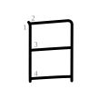
ON: ニチ, ジツ · KUN: ひ, -び, -か
Radicale 日 #72: sole / giorno · 4 tratti
日本（にほん）Giappone
Disegna una finestra rettangolare con un raggio al centro: da lì entra il sole del giorno.
120 schede: 100 fondamentali e 20 di esplorazione. Selezione didattica, non lista ufficiale N5. Copia il modello, poi scrivi senza guardare. Le storie sono mnemoniche inventate, non spiegazioni storiche.
Tratti: KanjiVG © Ulrich Apel, CC BY-SA 3.0. Letture e radicali: KANJIDIC2 © James William Breen / EDRDG, CC BY-SA 4.0. Fonti e licenze.

ON: ニチ, ジツ · KUN: ひ, -び, -か
Radicale 日 #72: sole / giorno · 4 tratti
日本（にほん）Giappone
Disegna una finestra rettangolare con un raggio al centro: da lì entra il sole del giorno.
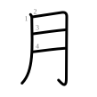
ON: ゲツ, ガツ · KUN: つき
Radicale 月 #74: luna · 4 tratti
月曜日（げつようび）lunedì
Immagina una falce di luna allungata con due piccole nuvole all'interno.
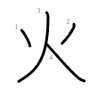
ON: カ · KUN: ひ, -び, ほ-
Radicale 火 #86: fuoco · 4 tratti
火曜日（かようび）martedì
Due scintille saltano ai lati di una fiamma centrale: senti il calore del fuoco.
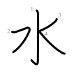
ON: スイ · KUN: みず, みず-
Radicale 水 #85: acqua · 4 tratti
水（みず）acqua
Un getto centrale con spruzzi ai lati: immagina l'acqua che scorre.
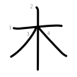
ON: ボク, モク · KUN: き, こ-
Radicale 木 #75: albero · 4 tratti
木（き）albero
Un tronco, rami aperti e radici: trasforma il segno in un piccolo albero.
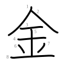
ON: キン, コン, ゴン · KUN: かね, かな-, -がね
Radicale 金 #167: metallo · 8 tratti
お金（おかね）denaro
Sotto un tetto nascondi due pepite: pensa all'oro e al denaro.
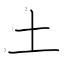
ON: ド, ト · KUN: つち
Radicale 土 #32: terra · 3 tratti
土曜日（どようび）sabato
Un germoglio attraversa due strati di terreno: pensa alla terra.
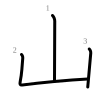
ON: サン, セン · KUN: やま
Radicale 山 #46: montagna · 3 tratti
山（やま）montagna
Tre cime, quella centrale più alta: segui il profilo di una montagna.
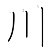
ON: セン · KUN: かわ
Radicale 巛 #47: fiume · 3 tratti
川（かわ）fiume
Tre corsi d'acqua paralleli scendono verso valle: il fiume.
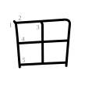
ON: デン · KUN: た
Radicale 田 #102: campo · 5 tratti
田中（たなか）cognome Tanaka
Dividi un campo quadrato in quattro risaie viste dall'alto.
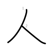
ON: ジン, ニン · KUN: ひと, -り, -と
Radicale 人 #9: persona · 2 tratti
人（ひと）persona
Due gambe sostengono una persona che cammina: non confonderlo con 入.
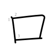
ON: コウ, ク · KUN: くち
Radicale 口 #30: bocca · 3 tratti
入口（いりぐち）entrata
Una bocca aperta e quadrata dice una sola parola.
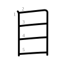
ON: モク, ボク · KUN: め, -め, ま-
Radicale 目 #109: occhio · 5 tratti
目（め）occhio
Una cornice verticale con due linee interne: immagina un occhio visto di lato.
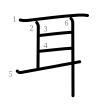
ON: ジ · KUN: みみ
Radicale 耳 #128: orecchio · 6 tratti
耳（みみ）orecchio
Le linee interne sono le pieghe di un orecchio che ascolta.
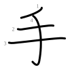
ON: シュ, ズ · KUN: て, て-, -て, た-
Radicale 手 #64: mano · 4 tratti
手（て）mano
Il tratto curvo è il polso, le linee sono dita di una mano stilizzata.
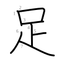
ON: ソク · KUN: あし, た.りる, た.る, た.す
Radicale 足 #157: piede · 7 tratti
足（あし）piede
Una bocca in alto chiama: sotto, un piede comincia a camminare.
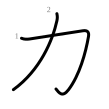
ON: リョク, リキ, リイ · KUN: ちから
Radicale 力 #19: forza · 2 tratti
力（ちから）forza
Un braccio piegato fa uno sforzo: collega la curva alla forza.
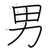
ON: ダン, ナン · KUN: おとこ, お
Radicale 田 #102: campo · 7 tratti
男（おとこ）uomo
Nel campo 田 serve forza 力: immagina un uomo al lavoro. È solo una storia per ricordare.
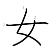
ON: ジョ, ニョ, ニョウ · KUN: おんな, め
Radicale 女 #38: donna · 3 tratti
女（おんな）donna
Immagina una figura seduta con le braccia raccolte: associa il contorno a donna.
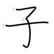
ON: シ, ス, ツ · KUN: こ, -こ, ね
Radicale 子 #39: bambino · 3 tratti
子供（こども）bambino
Una testa grande e due braccia aperte: un bambino chiede un abbraccio.
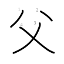
ON: フ · KUN: ちち
Radicale 父 #88: padre · 4 tratti
父（ちち）mio padre
Due attrezzi incrociati nella cassetta di papà: un'immagine per padre.
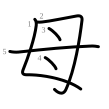
ON: ボ · KUN: はは, も
Radicale 毋 #80: non / madre · 5 tratti
母（はは）mia madre
Le due piccole tacche sono due ricordi della mamma dentro una cornice protettiva.
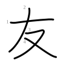
ON: ユウ · KUN: とも
Radicale 又 #29: mano destra / ancora · 4 tratti
友達（ともだち）amico
Due mani si incontrano per aiutarsi: l'amico ti tende una mano.
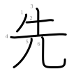
ON: セン · KUN: さき, ま.ず
Radicale 儿 #10: gambe · 6 tratti
先生（せんせい）insegnante
Un paio di gambe corre davanti agli altri: è il primo, quello che viene prima.
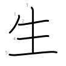
ON: セイ, ショウ · KUN: い.きる, い.かす, い.ける, う.まれる, うま.れる, う.まれ, うまれ, う.む, お.う, は.える, は.やす, き, なま, なま-, な.る, な.す, む.す, -う
Radicale 生 #100: vita · 5 tratti
学生（がくせい）studente
Un germoglio cresce dal terreno: pensa alla vita e alla nascita.
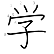
ON: ガク · KUN: まな.ぶ
Radicale 子 #39: bambino · 8 tratti
学校（がっこう）scuola
Sotto un piccolo tetto c'è un bambino 子 che studia.
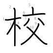
ON: コウ, キョウ · KUN:
Radicale 木 #75: albero · 10 tratti
学校（がっこう）scuola
Accanto all'albero 木 ci si incontra 交: immagina il cortile della scuola.
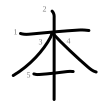
ON: ホン · KUN: もと
Radicale 木 #75: albero · 5 tratti
本（ほん）libro
Un albero 木 con una tacca vicino alla radice: l'origine; un libro ti porta alle radici di un argomento.
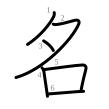
ON: メイ, ミョウ · KUN: な, -な
Radicale 口 #30: bocca · 6 tratti
名前（なまえ）nome
La sera 夕 qualcuno chiama con la bocca 口 il tuo nome.
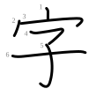
ON: ジ · KUN: あざ, あざな, -な
Radicale 子 #39: bambino · 6 tratti
漢字（かんじ）kanji
Un bambino 子 sotto il tetto 宀 impara a scrivere un carattere.
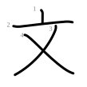
ON: ブン, モン · KUN: ふみ, あや
Radicale 文 #67: scrittura · 4 tratti
作文（さくぶん）componimento
Immagina un foglio con un segno grande: il tuo primo testo scritto.
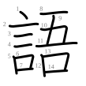
ON: ゴ · KUN: かた.る, かた.らう
Radicale 言 #149: parola · 14 tratti
日本語（にほんご）lingua giapponese
Parole 言, cinque 五 voci e una bocca 口: tante persone che parlano una lingua.
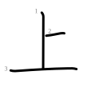
ON: ジョウ, ショウ, シャン · KUN: うえ, -うえ, うわ-, かみ, あ.げる, -あ.げる, あ.がる, -あ.がる, あ.がり, -あ.がり, のぼ.る, のぼ.り, のぼ.せる, のぼ.す, たてまつ.る
Radicale 一 #1: uno · 3 tratti
上（うえ）sopra
Un segnale sta sopra la linea del terreno: guarda dove punta il tratto corto.
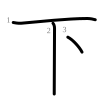
ON: カ, ゲ · KUN: した, しも, もと, さ.げる, さ.がる, くだ.る, くだ.り, くだ.す, -くだ.す, くだ.さる, お.ろす, お.りる
Radicale 一 #1: uno · 3 tratti
下（した）sotto
Un segnale scende sotto la linea del terreno: è il contrario di 上.
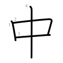
ON: チュウ · KUN: なか, うち, あた.る
Radicale 丨 #2: linea verticale · 4 tratti
中（なか）dentro
Una linea attraversa il centro esatto di una scatola: dentro, nel mezzo.
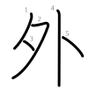
ON: ガイ, ゲ · KUN: そと, ほか, はず.す, はず.れる, と-
Radicale 夕 #36: sera · 5 tratti
外（そと）fuori
La sera 夕 guardi un cartello 卜 fuori dalla porta.
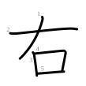
ON: ウ, ユウ · KUN: みぎ
Radicale 口 #30: bocca · 5 tratti
右（みぎ）destra
La mano cerca la bocca 口 sul lato destro: a destra trovi 口, non 工.
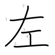
ON: サ, シャ · KUN: ひだり
Radicale 工 #48: lavoro · 5 tratti
左（ひだり）sinistra
La mano cerca il lavoro 工 sul lato sinistro: a sinistra trovi 工, non 口.
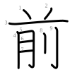
ON: ゼン · KUN: まえ, -まえ
Radicale 刀 #18: coltello · 9 tratti
前（まえ）davanti
Due passi davanti a te aprono la strada: collega il segno al davanti e al prima.
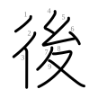
ON: ゴ, コウ · KUN: のち, うし.ろ, うしろ, あと, おく.れる
Radicale 彳 #60: passo · 9 tratti
午後（ごご）pomeriggio
Il passo 彳 torna indietro lungo un filo: pensa a quello che viene dopo o resta dietro.
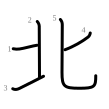
ON: ホク · KUN: きた
Radicale 匕 #21: cucchiaio · 5 tratti
北（きた）nord
Due persone si danno le spalle per cercare il nord sulla mappa.
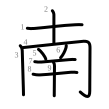
ON: ナン, ナ · KUN: みなみ
Radicale 十 #24: dieci · 9 tratti
南（みなみ）sud
Una bussola appesa indica un luogo caldo: il sud.
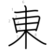
ON: トウ · KUN: ひがし
Radicale 木 #75: albero · 8 tratti
東（ひがし）est
Il sole 日 spunta tra i rami di un albero 木: immagina l'alba a est.
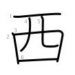
ON: セイ, サイ, ス · KUN: にし
Radicale 襾 #146: copertura · 6 tratti
西（にし）ovest
Una scatola raccoglie il sole alla fine del viaggio: tramonta a ovest.
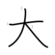
ON: ダイ, タイ · KUN: おお-, おお.きい, -おお.いに
Radicale 大 #37: grande · 3 tratti
大きい（おおきい）grande
Una persona 人 allarga le braccia con un tratto orizzontale: grande!
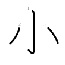
ON: ショウ · KUN: ちい.さい, こ-, お-, さ-
Radicale 小 #42: piccolo · 3 tratti
小さい（ちいさい）piccolo
Un tratto centrale e due briciole ai lati: tutto è piccolo.
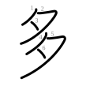
ON: タ · KUN: おお.い, まさ.に, まさ.る
Radicale 夕 #36: sera · 6 tratti
多い（おおい）numeroso
Due sere 夕 una sopra l'altra: tante sere diventano molte.
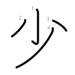
ON: ショウ · KUN: すく.ない, すこ.し
Radicale 小 #42: piccolo · 4 tratti
少ない（すくない）scarso
Da 小 cade via un pezzetto: ne rimane poco.
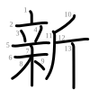
ON: シン · KUN: あたら.しい, あら.た, あら-, にい-
Radicale 斤 #69: ascia · 13 tratti
新しい（あたらしい）nuovo
Accanto al legno 木 c'è una lama 斤: un ramo appena tagliato è nuovo.
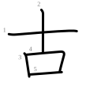
ON: コ · KUN: ふる.い, ふる-, -ふる.す
Radicale 口 #30: bocca · 5 tratti
古い（ふるい）vecchio
Una bocca 口 racconta dieci 十 storie antiche: vecchio.
ON: コウ · KUN: たか.い, たか, -だか, たか.まる, たか.める
Radicale 高 #189: alto · 10 tratti
高い（たかい）alto / costoso
Una torre con più livelli e un tetto: sali molto in alto.
ON: アン · KUN: やす.い, やす.まる, やす, やす.らか
Radicale 宀 #40: tetto · 6 tratti
安い（やすい）economico
Una persona 女 sotto il tetto 宀 si rilassa: associa la calma a un prezzo che puoi permetterti.
ON: チョウ · KUN: なが.い, おさ
Radicale 長 #168: lungo · 8 tratti
長い（ながい）lungo
Una lunga sciarpa scende e si piega: segui il tratto finale per ricordare lungo.
ON: ハク, ビャク · KUN: しろ, しら-, しろ.い
Radicale 白 #106: bianco · 5 tratti
白い（しろい）bianco
Una goccia di luce cade sul sole 日 e lo rende bianco.
ON: ヒャク, ビャク · KUN: もも
Radicale 白 #106: bianco · 6 tratti
百（ひゃく）cento
Un tratto sopra 白: una scatola bianca contiene cento gettoni.
ON: セン · KUN: ち
Radicale 十 #24: dieci · 3 tratti
千（せん）mille
Una piccola inclinazione sopra 十 moltiplica la pila fino a mille.
ON: マン, バン · KUN: よろず
Radicale 一 #1: uno · 3 tratti
万（まん）diecimila
Un lungo striscione annuncia diecimila punti: segui l'uncino finale.
ON: エン · KUN: まる.い, まる, まど, まど.か, まろ.やか
Radicale 冂 #13: cornice aperta in basso · 4 tratti
百円（ひゃくえん）cento yen
Una cornice custodisce monete rotonde: pensa agli yen.
ON: ネン · KUN: とし
Radicale 干 #51: scudo / asciutto · 6 tratti
今年（ことし）quest'anno
Conta i segni su un calendario: ogni giro completo è un anno.
ON: ジ · KUN: とき, -どき
Radicale 日 #72: sole / giorno · 10 tratti
一時（いちじ）l'una
Il sole 日 arriva al tempio 寺 all'ora stabilita: un orologio immaginario.
ON: ブン, フン, ブ · KUN: わ.ける, わ.け, わ.かれる, わ.かる, わ.かつ
Radicale 刀 #18: coltello · 4 tratti
五分（ごふん）cinque minuti
Una lama 刀 separa due parti 八: dividere, parte; anche minuti.
ON: ハン · KUN: なか.ば
Radicale 十 #24: dieci · 5 tratti
半分（はんぶん）metà
Taglia un segno simmetrico in due metà uguali.
ON: コン, キン · KUN: いま
Radicale 人 #9: persona · 4 tratti
今（いま）adesso
Un tetto raccoglie questo istante: fallo adesso, prima che passi.
ON: マイ · KUN: ごと, -ごと.に
Radicale 毋 #80: non / madre · 6 tratti
毎日（まいにち）ogni giorno
Ogni mattina ripeti il medesimo gesto: lega il segno alla tua routine quotidiana.
ON: カ · KUN: なに, なん, なに-, なん-
Radicale 人 #9: persona · 7 tratti
何（なに）che cosa
Una persona 亻si ferma e fa una domanda: che cosa?
ON: コウ, ギョウ, アン · KUN: い.く, ゆ.く, -ゆ.き, -ゆき, -い.き, -いき, おこな.う, おこ.なう
Radicale 行 #144: andare · 6 tratti
行く（いく）andare
Due bordi di una strada lasciano spazio per andare e camminare.
ON: ライ, タイ · KUN: く.る, きた.る, きた.す, き.たす, き.たる, き, こ
Radicale 木 #75: albero · 7 tratti
来る（くる）venire
Tra rami e linee qualcuno viene verso di te: associa la figura al movimento in arrivo.
ON: キ · KUN: かえ.る, かえ.す, おく.る, とつ.ぐ
Radicale 巾 #50: stoffa · 10 tratti
帰る（かえる）tornare
Immagina una scopa pronta all'ingresso: è ora di tornare a casa.
ON: ショク, ジキ · KUN: く.う, く.らう, た.べる, は.む
Radicale 食 #184: cibo · 9 tratti
食べる（たべる）mangiare
Sotto un coperchio trovi un pasto: aprilo e mangia.
ON: イン, オン · KUN: の.む, -の.み
Radicale 食 #184: cibo · 12 tratti
飲む（のむ）bere
Il cibo 食 incontra una persona che desidera 欠 una bevanda: bere.
ON: ケン · KUN: み.る, み.える, み.せる
Radicale 見 #147: vedere · 7 tratti
見る（みる）vedere
Un occhio 目 con due gambe 儿 si sposta per vedere meglio.
ON: ブン, モン · KUN: き.く, き.こえる
Radicale 耳 #128: orecchio · 14 tratti
聞く（きく）ascoltare
Un orecchio 耳 dentro un portale 門 ascolta chi arriva.
ON: ドク, トク, トウ · KUN: よ.む, -よ.み
Radicale 言 #149: parola · 14 tratti
読む（よむ）leggere
Le parole 言 incontrano un banco di vendita 売 pieno di libri: li leggi tutti.
ON: ショ · KUN: か.く, -が.き, -がき
Radicale 曰 #73: dire · 10 tratti
書く（かく）scrivere
Una penna sopra un foglio illuminato dal sole 日: scrivi una riga.
ON: ワ · KUN: はな.す, はなし
Radicale 言 #149: parola · 13 tratti
話す（はなす）parlare
Le parole 言 escono dalla lingua 舌: parlare.
ON: バイ · KUN: か.う
Radicale 貝 #154: conchiglia · 12 tratti
買う（かう）comprare
Una rete sopra una conchiglia 貝 raccoglie acquisti al mercato.
ON: キュウ · KUN: やす.む, やす.まる, やす.める
Radicale 人 #9: persona · 6 tratti
休む（やすむ）riposare
Una persona 亻si appoggia a un albero 木 per riposare.
ON: ニュウ, ジュ · KUN: い.る, -い.る, -い.り, い.れる, -い.れ, はい.る
Radicale 入 #11: entrare · 2 tratti
入る（はいる）entrare
Due linee aprono un passaggio per entrare: confrontale con le gambe di 人.
ON: シュツ, スイ · KUN: で.る, -で, だ.す, -だ.す, い.でる, い.だす
Radicale 凵 #17: contenitore aperto in alto · 5 tratti
出る（でる）uscire
Una pianta spunta fuori da due livelli di terreno: esce.
ON: リツ, リュウ, リットル · KUN: た.つ, -た.つ, た.ち-, た.てる, -た.てる, た.て-, たて-, -た.て, -だ.て, -だ.てる
Radicale 立 #117: stare in piedi · 5 tratti
立つ（たつ）alzarsi
Una figura poggia saldamente su una linea: sta in piedi.
ON: カイ, エ · KUN: あ.う, あ.わせる, あつ.まる
Radicale 人 #9: persona · 6 tratti
会う（あう）incontrare
Persone si raccolgono sotto un tetto per incontrarsi.
ON: シャ · KUN: やしろ
Radicale 示 #113: segno rituale · 7 tratti
会社（かいしゃ）azienda
Accanto al segno rituale 礻c'è terra 土 condivisa: immagina una società nello stesso luogo.
ON: テン · KUN: みせ, たな
Radicale 广 #53: riparo · 8 tratti
店（みせ）negozio
Sotto un riparo 广 c'è un banco: è il tuo negozio preferito.
ON: エキ · KUN:
Radicale 馬 #187: cavallo · 14 tratti
駅（えき）stazione
Un cavallo 馬 si ferma a una tappa: oggi il tuo viaggio si ferma alla stazione.
ON: シャ · KUN: くるま
Radicale 車 #159: veicolo · 7 tratti
車（くるま）auto
Guarda dall'alto un carro con ruote e asse centrale: veicolo.
ON: デン · KUN:
Radicale 雨 #173: pioggia · 13 tratti
電車（でんしゃ）treno
La pioggia 雨 si carica e scarica energia: elettricità nel temporale.
ON: テン · KUN: あまつ, あめ, あま-
Radicale 大 #37: grande · 4 tratti
天気（てんき）meteo
Sopra una persona grande 大 c'è un'altra linea: il cielo sopra tutti.
ON: キ, ケ · KUN: いき, き
Radicale 气 #84: vapore · 6 tratti
元気（げんき）in salute
Vapore e un piccolo incrocio: l'energia che senti nell'aria.
ON: ウ · KUN: あめ, あま-, -さめ
Radicale 雨 #173: pioggia · 8 tratti
雨（あめ）pioggia
Sotto una nuvola piatta cadono quattro gocce: pioggia.
ON: クウ · KUN: そら, あ.く, あ.き, あ.ける, から, す.く, す.かす, むな.しい
Radicale 穴 #116: cavità · 8 tratti
空（そら）cielo
Un'apertura 穴 sopra il lavoro 工 lascia vedere il cielo vuoto.
ON: イチ, イツ · KUN: ひと-, ひと.つ
Radicale 一 #1: uno · 1 tratti
一つ（ひとつ）uno
Un solo tratto: un solo punto guadagnato.
ON: ニ, ジ · KUN: ふた, ふた.つ, ふたたび
Radicale 二 #7: due · 2 tratti
二つ（ふたつ）due
Due linee parallele, due gradini.
ON: サン, ゾウ · KUN: み, み.つ, みっ.つ
Radicale 一 #1: uno · 3 tratti
三つ（みっつ）tre
Tre linee: conta i tre piani della tua base.
ON: シ · KUN: よ, よ.つ, よっ.つ, よん
Radicale 囗 #31: recinto · 5 tratti
四つ（よっつ）quattro
Quattro pareti racchiudono due piccole gambe: immagina una stanza con quattro angoli.
ON: ゴ · KUN: いつ, いつ.つ
Radicale 二 #7: due · 4 tratti
五つ（いつつ）cinque
Immagina cinque dita che si intrecciano: ridisegna lentamente i quattro tratti.
ON: ロク, リク · KUN: む, む.つ, むっ.つ, むい
Radicale 八 #12: otto / dividere · 4 tratti
六つ（むっつ）sei
Un tetto e due gambe: sei amici si riparano dalla pioggia.
ON: シチ · KUN: なな, なな.つ, なの
Radicale 一 #1: uno · 2 tratti
七つ（ななつ）sette
Un gancio attraversa una linea: appendi sette medaglie.
ON: ハチ, ハツ · KUN: や, や.つ, やっ.つ, よう
Radicale 八 #12: otto / dividere · 2 tratti
八つ（やっつ）otto
Due linee si allargano: l'otto distribuisce premi a destra e sinistra.
ON: キュウ, ク · KUN: ここの, ここの.つ
Radicale 乙 #5: secondo / uncino · 2 tratti
九つ（ここのつ）nove
Una curva con un gancio: nove tentativi prima dell'ultimo punto.
ON: ジュウ, ジッ, ジュッ · KUN: とお, と, そ
Radicale 十 #24: dieci · 2 tratti
十（じゅう）dieci
Una croce segna dieci punti sulla mappa.
ON: ケン · KUN: いぬ, いぬ-
Radicale 犬 #94: cane · 4 tratti
犬（いぬ）cane
Aggiungi una macchiolina a 大: è il naso del tuo cane gigante.
ON: ビョウ · KUN: ねこ
Radicale 犬 #94: cane · 11 tratti
猫（ねこ）gatto
Un animale 犭passeggia tra germogli e campo 苗: il gatto esplora il giardino.
ON: ギョ · KUN: うお, さかな, -ざかな
Radicale 魚 #195: pesce · 11 tratti
魚（さかな）pesce
Testa, corpo a riquadri e quattro piccoli tratti in basso: un pesce nuota.
ON: カ, ケ · KUN: はな
Radicale 艸 #140: erba · 7 tratti
花（はな）fiore
Sotto l'erba 艹 qualcosa cambia 化: sboccia un fiore.
ON: チョウ · KUN: まち
Radicale 田 #102: campo · 7 tratti
町（まち）cittadina
Un campo 田 si collega a una strada 丁: nasce una cittadina.
ON: ソン · KUN: むら
Radicale 木 #75: albero · 7 tratti
村（むら）villaggio
Un albero 木 accanto a un piccolo segno 寸: il villaggio ha un albero come punto d'incontro.
ON: シン · KUN: もり
Radicale 木 #75: albero · 12 tratti
森（もり）foresta
Tre alberi 木 riempiono lo spazio: una foresta fitta.
ON: リン · KUN: はやし
Radicale 木 #75: albero · 8 tratti
林（はやし）bosco
Due alberi 木 stanno vicini: un piccolo bosco, meno fitto di 森.
ON: セキ · KUN: ゆう
Radicale 夕 #36: sera · 3 tratti
夕方（ゆうがた）verso sera
Una piccola luna comincia a vedersi: arriva la sera.
ON: セキ, シャク, コク · KUN: いし
Radicale 石 #112: pietra · 5 tratti
石（いし）pietra
Sotto una scogliera cade un blocco 口: una pietra.
ON: セキ, シャク · KUN: あか, あか-, あか.い, あか.らむ, あか.らめる
Radicale 赤 #155: rosso · 7 tratti
赤い（あかい）rosso
Immagina un fuoco sotto la terra che colora tutto di rosso.
ON: セイ, ショウ · KUN: あお, あお-, あお.い
Radicale 靑 #174: blu / verde · 8 tratti
青い（あおい）blu
Germogli sopra una zona simile a 月: immagina un paesaggio blu e verde.
ON: オン, イン, -ノン · KUN: おと, ね
Radicale 音 #180: suono · 9 tratti
音（おと）suono
Un suono si alza 立 sopra il sole 日: la sveglia suona al mattino.
ON: セイ, ショウ · KUN: ただ.しい, ただ.す, まさ, まさ.に
Radicale 止 #77: fermarsi · 5 tratti
正しい（ただしい）corretto
Una linea indica dove fermare 止 i passi: la posizione corretta.
ON: ギョク · KUN: たま, たま-, -だま
Radicale 玉 #96: giada · 5 tratti
玉（たま）sfera
Un punto prezioso accanto a 王: la gemma rotonda del re.
ON: オウ, -ノウ · KUN:
Radicale 玉 #96: giada · 4 tratti
王（おう）re
Tre livelli collegati da un asse: il re tiene insieme il suo regno.
ON: シ · KUN: いと
Radicale 糸 #120: filo · 6 tratti
糸（いと）filo
Una matassa si avvolge in alto e lascia piccoli fili in basso.
ON: バイ · KUN: かい
Radicale 貝 #154: conchiglia · 7 tratti
貝（かい）conchiglia
Un guscio simile a 目 con due piedini: una conchiglia sulla sabbia.
ON: チク · KUN: たけ
Radicale 竹 #118: bambù · 6 tratti
竹（たけ）bambù
Due steli con foglie piegate crescono uno accanto all'altro: bambù.
ON: ソウ · KUN: くさ, くさ-, -ぐさ
Radicale 艸 #140: erba · 9 tratti
草（くさ）erba
Erba 艹 sopra il presto 早: l'erba ricresce presto dopo il taglio.